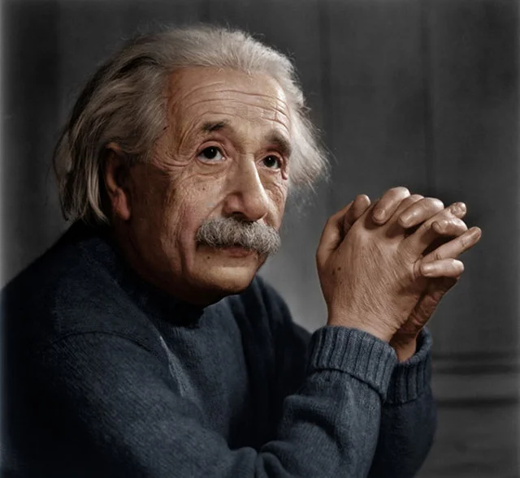

Albert Einstein

Albert Einstein foi um dos maiores cientistas da história, conhecido principalmente pela Teoria da Relatividade. Nascido em 1879, na cidade de Ulm, na Alemanha, Einstein revolucionou a física com suas descobertas e contribuições para o campo científico. Sua genialidade e mente brilhante fizeram dele um ícone da ciência e um exemplo de perseverança e dedicação.
Além de sua famosa teoria, Einstein também fez contribuições significativas para a compreensão da natureza da luz, do movimento das partículas e da energia. Suas equações matemáticas e experimentos revolucionaram a forma como entendemos o universo. Sua mente inquisitiva e curiosa o levaram a questionar conceitos estabelecidos e buscar respostas para os mistérios do cosmos.
Além de suas realizações científicas, Albert Einstein também era conhecido por seu ativismo político e defesa dos direitos humanos. Durante sua vida, ele se posicionou contra o nazismo e lutou pela paz mundial. Sua influência vai além do campo científico, inspirando gerações de pessoas a nunca pararem de questionar, explorar e buscar conhecimento. O legado de Albert Einstein perdura até os dias atuais, sendo uma fonte de inspiração para todos aqueles que buscam entender o mundo ao seu redor.